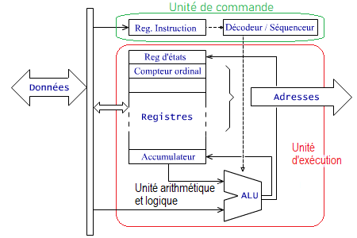
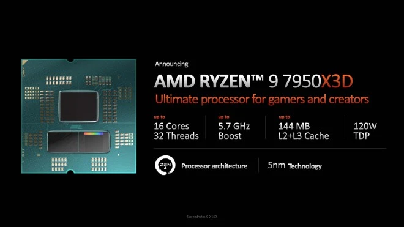
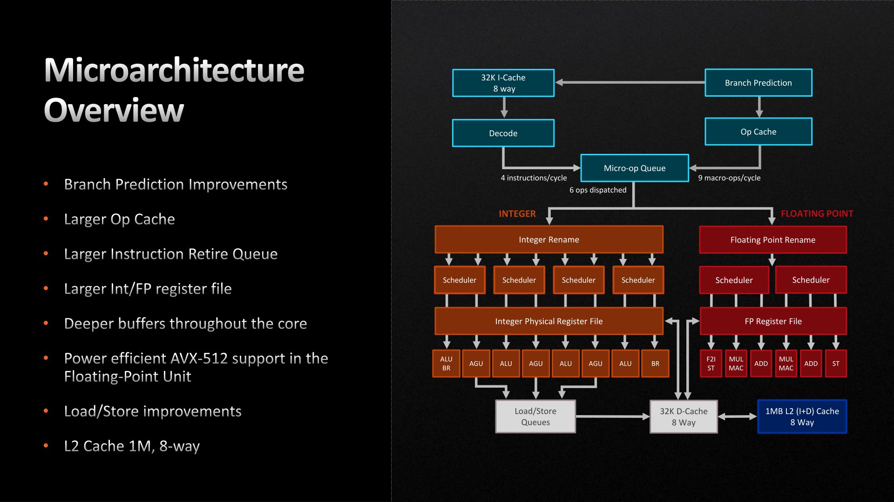
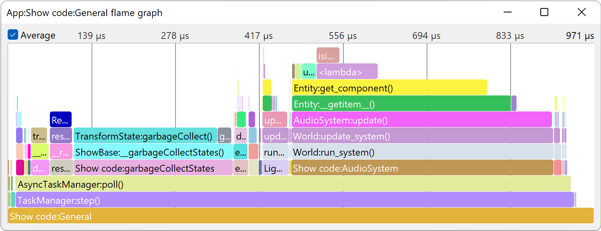

Le lien entre l'hardware et le métier de développeur
Les langages de programmation de haut niveau, tels que Python et Java, offrent aux développeurs une grande flexibilité et une facilité d'utilisation pour créer des applications complexes. Cependant, ces langages doivent être traduits en un langage de bas niveau, comme l'assembleur, pour que l'ordinateur puisse les exécuter. Les langages de bas niveau, bien que plus difficiles à apprendre, peuvent permettre aux développeurs d'optimiser davantage les performances de leurs applications en accédant directement aux ressources du processeur.

Les architectures de processeurs les plus récentes
Les processeurs modernes sont de plus en plus puissants, mais ils ont également des architectures complexes qui peuvent avoir un impact sur les performances des applications. Les processeurs multi-cœurs, par exemple, permettent à plusieurs tâches de s'exécuter en parallèle, mais nécessitent une planification précise pour éviter les conflits de données et les goulots d'étranglement. De même, les processeurs spécialisés, tels que les processeurs graphiques, peuvent offrir des performances supérieures pour certaines tâches, comme les calculs intensifs de graphiques 3D.
  
L'exigeance des applications en termes de puissance de calcul
L'optimisation du code est essentielle pour obtenir les meilleures performances possibles de l'application. Les développeurs doivent comprendre comment fonctionne le processeur et comment il traite les données pour optimiser leur code. Par exemple, l'utilisation de boucles pour traiter de grandes quantités de données peut ralentir les performances si elles ne sont pas optimisées pour tirer parti des caches du processeur. Les outils tels que les profilers peuvent aider les développeurs à identifier les problèmes de performances et à optimiser leur code en conséquence.
